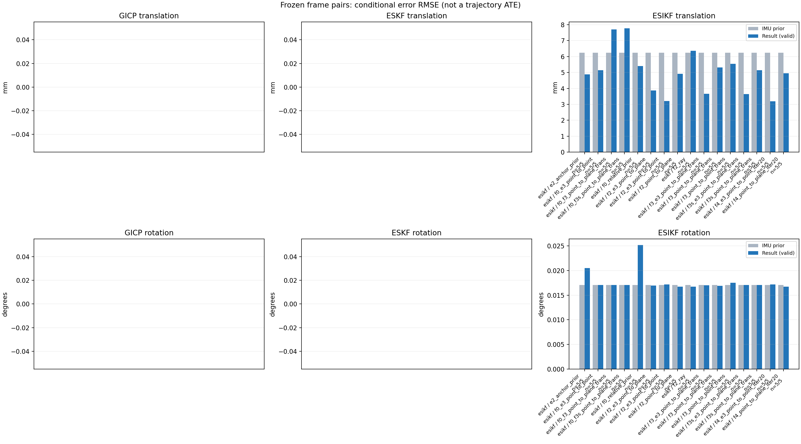

20261015_112553_up · depth=disparity_cache · cache=3c1f255f123ac8f2cbd6
模型视差：/home/ubuntu22/slam/SIO_SLAM/models/tensorrt/disp_896x448_fp16.plan；engine SHA256=604cf6ac1f705c877260711730dd5d2d58c2a21f3020c03c668401ef7fb1e768。输入为生产裁剪与光照处理后的 RGB 0..255；此实验使用原始浮点像素视差，不应用完整前端的邻域视差后处理。
原始 ONNX SHA256：e9f49736a65d68d06681add463866b6defdf78fdd7f4f50f6cc941b682fdc0bc。
代价体图改写验证：ONNX Runtime 固定随机特征输入，最大绝对误差 0；该项检查图改写，完整模型精度仍需由录制数据评估。
配准代码版本：744ac2d993ae629b0cc44a3b1d995e04ab4fad48；观测生成版本：744ac2d993ae629b0cc44a3b1d995e04ab4fad48。
固定图像对与纯 IMU 先验；ESKF 回放固定 GICP 观测，ESIKF 直接读取点云。真值只用于此报告。
同时查看 converged 与 solver_status：上游默认 Stereo 在 max_iter / stopped_at_minimum 时也可能置 converged=true。valid 表示输入检查通过，不表示精度提升。欧氏 GICP 未提供独立的点距 RMSE，该列显示 NaN。
误差按每对图像的锚点计算，单位 m / degrees。此处 RMSE 不是全序列 ATE；末帧受同一锚点条件约束。NIS 与条件马氏距离是诊断量，少量相关图像对不能用于宣称协方差已校准。
全部指标 CSV · R / P 矩阵 CSV · Stereo 求解逐轮 CSV · ESIKF 逐轮轨迹 CSV · 末轮 H / R / K_pose 矩阵 CSV · 配置快照 · 矢量图
unflagged 排除纯惯性先验平移误差超过 50 mm 的图像对；whitened 为误差按协方差白化后的每自由度均值，协方差与实际误差相符时约为 1。prior_whitened 用真值误差只检验先验 P；NIS 为 ESIKF 首轮 rᵀ(P+R)⁻¹r，不用真值，检验的是 P+R 的总量，单靠它分不开 P 与 R，偏差、错误对应和线性化误差也会抬高它。观测方差超过先验方差 1e+04 倍的方向视为不可观，从 NIS 及其自由度中去掉（nis_dof）。一致时 nis_per_dof 均值约 1、nis_over_chi2_median 中位数约 1；帧对少且共享序列，超出 95% 分位的比例只作参考。
| stage | method | variant | valid | total | result_translation_rmse_m | result_rotation_rmse_deg | result_translation_median_m | result_rotation_median_deg | result_translation_rmse_unflagged_m | result_rotation_rmse_unflagged_deg | improved_translation | improved_rotation | posterior_whitened_by_P_rot_mean | posterior_whitened_by_P_trans_mean | prior_whitened_by_P_rot_mean | prior_whitened_by_P_trans_mean | nis_per_dof_mean | nis_over_chi2_median_median | nis_exceeds_chi2_95_fraction |
|---|---|---|---|---|---|---|---|---|---|---|---|---|---|---|---|---|---|---|---|
| esikf | esikf | e2_anchor_prior | 5 | 5 | 0.0048845 | 0.020496 | 0.0021326 | 0.012524 | 0.0048845 | 0.020496 | 1 | 4 | 47.083 | 59.157 | 32.939 | 0.49279 | 3.9617 | 2.9683 | 0.6 |
| esikf | esikf | f0_e3_point_to_point | 5 | 5 | 0.0051423 | 0.01708 | 0.0033327 | 0.012916 | 0.0051423 | 0.01708 | 2 | 2 | 26.959 | 1.1159 | 26.61 | 0.003123 | 0.013812 | 0.014783 | 0 |
| esikf | esikf | f0_f3_point_to_plane_trans | 5 | 5 | 0.0077022 | 0.017048 | 0.0071039 | 0.012924 | 0.0077022 | 0.017048 | 2 | 2 | 26.939 | 31.643 | 26.61 | 0.003123 | 2.5889 | 0.10922 | 0.2 |
| esikf | esikf | f0_f3s_point_to_plane_trans | 5 | 5 | 0.0077757 | 0.017042 | 0.0071467 | 0.012913 | 0.0077757 | 0.017042 | 2 | 0 | 26.61 | 32.018 | 26.61 | 0.003123 | 2.5889 | 0.10922 | 0.2 |
| esikf | esikf | f0_relative_prior | 5 | 5 | 0.0054012 | 0.025149 | 0.0036269 | 0.012766 | 0.0054012 | 0.025149 | 1 | 4 | 39.577 | 59.628 | 26.61 | 0.003123 | 3.5592 | 2.4192 | 0.6 |
| esikf | esikf | f2_e3_point_to_plane | 5 | 5 | 0.0038628 | 0.016944 | 0.0018172 | 0.012896 | 0.0038628 | 0.016944 | 3 | 3 | 34.418 | 0.49367 | 32.939 | 0.49279 | 0.3979 | 0.5198 | 0 |
| esikf | esikf | f2_e3_point_to_point | 5 | 5 | 0.0032121 | 0.017181 | 0.001819 | 0.012906 | 0.0032121 | 0.017181 | 3 | 2 | 35.238 | 0.46954 | 32.939 | 0.49279 | 0.073988 | 0.096362 | 0 |
| esikf | esikf | f2_point_to_plane | 5 | 5 | 0.0049167 | 0.016705 | 0.0016179 | 0.012243 | 0.0049167 | 0.016705 | 3 | 3 | 36.884 | 11.524 | 32.939 | 0.49279 | 16.941 | 14.294 | 0.8 |
| esikf | esikf | f2_ray | 5 | 5 | 0.0063678 | 0.016714 | 0.0039237 | 0.013385 | 0.0063678 | 0.016714 | 1 | 2 | 39.298 | 12.454 | 32.939 | 0.49279 | 16.457 | 7.1417 | 1 |
| esikf | esikf | f3_e3_point_to_plane_trans | 5 | 5 | 0.0036655 | 0.017022 | 0.0018377 | 0.012913 | 0.0036655 | 0.017022 | 3 | 3 | 34.524 | 0.46604 | 32.939 | 0.49279 | 0.93183 | 1.1565 | 0 |
| esikf | esikf | f3_point_to_plane_trans | 5 | 5 | 0.0053192 | 0.016871 | 0.0029361 | 0.01289 | 0.0053192 | 0.016871 | 2 | 3 | 38.172 | 17.268 | 32.939 | 0.49279 | 19.163 | 21.584 | 0.6 |
| esikf | esikf | f3_point_to_point_trans | 5 | 5 | 0.0055457 | 0.017516 | 0.0051988 | 0.013257 | 0.0055457 | 0.017516 | 2 | 2 | 39.668 | 166.7 | 32.939 | 0.49279 | 4.8471 | 7.7824 | 0.6 |
| esikf | esikf | f3s_e3_point_to_plane_trans | 5 | 5 | 0.0036448 | 0.017042 | 0.0018377 | 0.012913 | 0.0036448 | 0.017042 | 3 | 0 | 32.939 | 0.46342 | 32.939 | 0.49279 | 0.93183 | 1.1565 | 0 |
| esikf | esikf | f3s_point_to_plane_trans | 5 | 5 | 0.0051445 | 0.017042 | 0.0029637 | 0.012913 | 0.0051445 | 0.017042 | 2 | 0 | 32.939 | 16.318 | 32.939 | 0.49279 | 19.163 | 21.584 | 0.6 |
| esikf | esikf | f4_e3_point_to_point_iter20 | 5 | 5 | 0.003195 | 0.017181 | 0.001819 | 0.012906 | 0.003195 | 0.017181 | 3 | 2 | 35.239 | 0.4652 | 32.939 | 0.49279 | 0.073988 | 0.096362 | 0 |
| esikf | esikf | f4_point_to_plane_iter20 | 5 | 5 | 0.0049422 | 0.016695 | 0.0016179 | 0.012243 | 0.0049422 | 0.016695 | 3 | 3 | 36.871 | 11.571 | 32.939 | 0.49279 | 16.941 | 14.294 | 0.8 |

| stage | case | method | variant | status | solver_status | inliers | converged | covariance_convention | covariance_from_hessian | fitness | registration_rmse_m | prior_trans_error_m | result_trans_error_m | prior_rot_error_deg | result_rot_error_deg | prior_flagged | R_rot_trace_rad2 | R_pos_trace_m2 | nis_regularized | posterior_whitened_by_P_rot | posterior_whitened_by_P_trans | prior_whitened_by_P_rot | prior_whitened_by_P_trans | nis_per_dof | nis_dof |
|---|---|---|---|---|---|---|---|---|---|---|---|---|---|---|---|---|---|---|---|---|---|---|---|---|---|
| esikf | static_start | esikf | e2_anchor_prior | updated | converged | 13059 | 1 | 1 | 0 | 0 | 0.00010829 | 0.00038756 | 0.0066323 | 0.0064659 | 0 | 1.919e-07 | 1.0115e-06 | nan | 9.9348 | 0.83772 | 9.6493 | 0.041909 | 2.6458 | 6 | |
| esikf | static_start | esikf | f0_relative_prior | updated | converged | 13049 | 1 | 1 | 0 | 0 | 0.00010829 | 0.0017495 | 0.0066323 | 0.0063673 | 0 | 1.9303e-07 | 1.0192e-06 | nan | 9.2674 | 4.6963 | 9.5227 | 0.0015419 | 2.1563 | 6 | |
| esikf | static_start | esikf | f2_point_to_plane | updated | converged | 13059 | 1 | 1 | 0 | 0 | 0.00010829 | 0.00059119 | 0.0066323 | 0.0070722 | 0 | 1.2849e-06 | 5.057e-06 | nan | 11.088 | 1.4222 | 9.6493 | 0.041909 | 23.04 | 6 | |
| esikf | static_start | esikf | f2_ray | updated | converged | 13059 | 1 | 1 | 0 | 0 | 0.00010829 | 0.00062849 | 0.0066323 | 0.006618 | 0 | 0.016589 | 2.0916e-05 | nan | 9.6093 | 1.4932 | 9.6493 | 0.041909 | 34.653 | 3 | |
| esikf | static_start | esikf | f3_point_to_point_trans | updated | converged | 13149 | 1 | 1 | 0 | 0 | 0.00010829 | 0.0023374 | 0.0066323 | 0.0066194 | 0 | 0.1875 | 9.4744e-07 | nan | 9.6128 | 43.826 | 9.6493 | 0.041909 | 6.8164 | 3 | |
| esikf | static_start | esikf | f3_point_to_plane_trans | updated | converged | 13068 | 1 | 1 | 0 | 0 | 0.00010829 | 0.0010265 | 0.0066323 | 0.0066248 | 0 | 1.2803 | 5.0168e-06 | nan | 9.6272 | 4.2521 | 9.6493 | 0.041909 | 30.542 | 3 | |
| esikf | static_start | esikf | f0_f3_point_to_plane_trans | updated_not_converged | max_iterations | 13295 | 0 | 1 | 0 | 0 | 0.00010829 | 0.0071039 | 0.0066323 | 0.0066123 | 0 | 1.2078 | 4.1305e-06 | nan | 9.4649 | 35.744 | 9.5227 | 0.0015419 | 11.567 | 3 | |
| esikf | static_start | esikf | f3s_point_to_plane_trans | updated | converged | 13068 | 1 | 1 | 0 | 0 | 0.00010829 | 0.0010265 | 0.0066323 | 0.0066323 | 0 | 1.2803 | 5.0168e-06 | nan | 9.6493 | 4.2521 | 9.6493 | 0.041909 | 30.542 | 3 | |
| esikf | static_start | esikf | f0_f3s_point_to_plane_trans | updated_not_converged | max_iterations | 13292 | 0 | 1 | 0 | 0 | 0.00010829 | 0.0071467 | 0.0066323 | 0.0066323 | 0 | 1.2089 | 4.1321e-06 | nan | 9.5227 | 36.245 | 9.5227 | 0.0015419 | 11.567 | 3 | |
| esikf | static_start | esikf | f4_point_to_plane_iter20 | updated | converged | 13059 | 1 | 1 | 0 | 0 | 0.00010829 | 0.00059119 | 0.0066323 | 0.0070722 | 0 | 1.2849e-06 | 5.057e-06 | nan | 11.088 | 1.4222 | 9.6493 | 0.041909 | 23.04 | 6 | |
| esikf | static_start | esikf | f2_e3_point_to_point | updated | converged | 13059 | 1 | 1 | 0 | 0 | 0.00010829 | 0.00011198 | 0.0066323 | 0.0066353 | 0 | 2.1344e-05 | 8.421e-05 | nan | 9.6684 | 0.045123 | 9.6493 | 0.041909 | 0.022096 | 4 | |
| esikf | static_start | esikf | f0_e3_point_to_point | updated | converged | 13059 | 1 | 1 | 0 | 0 | 0.00010829 | 0.00022242 | 0.0066323 | 0.0066335 | 0 | 2.1344e-05 | 8.4211e-05 | nan | 9.5356 | 0.0084791 | 9.5227 | 0.0015419 | 0.019487 | 4 | |
| esikf | static_start | esikf | f2_e3_point_to_plane | updated | converged | 13059 | 1 | 1 | 0 | 0 | 0.00010829 | 0.00011185 | 0.0066323 | 0.0066444 | 0 | 7.5074e-05 | 0.00018163 | nan | 9.686 | 0.044823 | 9.6493 | 0.041909 | 0.40995 | 3 | |
| esikf | static_start | esikf | f3_e3_point_to_plane_trans | updated | converged | 13059 | 1 | 1 | 0 | 0 | 0.00010829 | 0.00011973 | 0.0066323 | 0.0066322 | 0 | 1.2849 | 0.00018163 | nan | 9.649 | 0.051359 | 9.6493 | 0.041909 | 0.95136 | 3 | |
| esikf | static_start | esikf | f3s_e3_point_to_plane_trans | updated | converged | 13059 | 1 | 1 | 0 | 0 | 0.00010829 | 0.00011973 | 0.0066323 | 0.0066323 | 0 | 1.2849 | 0.00018163 | nan | 9.6493 | 0.051359 | 9.6493 | 0.041909 | 0.95136 | 3 | |
| esikf | static_start | esikf | f4_e3_point_to_point_iter20 | updated | converged | 13059 | 1 | 1 | 0 | 0 | 0.00010829 | 0.00011198 | 0.0066323 | 0.0066353 | 0 | 2.1344e-05 | 8.421e-05 | nan | 9.6684 | 0.045123 | 9.6493 | 0.041909 | 0.022096 | 4 | |
| esikf | sync_motion | esikf | e2_anchor_prior | updated | converged | 12346 | 1 | 1 | 0 | 0 | 0.00031706 | 0.00084127 | 0.012913 | 0.012524 | 0 | 2.0713e-07 | 1.0192e-06 | nan | 55.759 | 3.2762 | 56.308 | 0.17592 | 10.387 | 6 | |
| esikf | sync_motion | esikf | f0_relative_prior | updated_not_converged | max_iterations | 12355 | 0 | 1 | 0 | 0 | 0.00031706 | 0.0036269 | 0.012913 | 0.012766 | 0 | 2.0435e-07 | 9.8376e-07 | nan | 48.444 | 31.698 | 48.592 | 0.00060663 | 9.7029 | 6 | |
| esikf | sync_motion | esikf | f2_point_to_plane | updated | converged | 12396 | 1 | 1 | 0 | 0 | 0.00031706 | 0.0011987 | 0.012913 | 0.012243 | 0 | 1.3017e-06 | 4.8895e-06 | nan | 52.497 | 4.0128 | 56.308 | 0.17592 | 43.086 | 6 | |
| esikf | sync_motion | esikf | f2_ray | updated | converged | 12352 | 1 | 1 | 0 | 0 | 0.00031706 | 0.001151 | 0.012913 | 0.013385 | 0 | 0.0086709 | 1.2455e-05 | nan | 59.94 | 3.1381 | 56.308 | 0.17592 | 34.123 | 3 | |
| esikf | sync_motion | esikf | f3_point_to_point_trans | updated | converged | 12446 | 1 | 1 | 0 | 0 | 0.00031706 | 0.0051988 | 0.012913 | 0.013257 | 0 | 0.20062 | 9.3561e-07 | nan | 60.025 | 186.9 | 56.308 | 0.17592 | 10.806 | 3 | |
| esikf | sync_motion | esikf | f3_point_to_plane_trans | updated | converged | 12387 | 1 | 1 | 0 | 0 | 0.00031706 | 0.0019336 | 0.012913 | 0.01289 | 0 | 1.3028 | 4.8168e-06 | nan | 56.841 | 10.632 | 56.308 | 0.17592 | 45.577 | 3 | |
| esikf | sync_motion | esikf | f0_f3_point_to_plane_trans | updated_not_converged | max_iterations | 12465 | 0 | 1 | 0 | 0 | 0.00031706 | 0.00988 | 0.012913 | 0.012924 | 0 | 1.276 | 4.2531e-06 | nan | 48.738 | 50.852 | 48.592 | 0.00060663 | 1.2758 | 3 | |
| esikf | sync_motion | esikf | f3s_point_to_plane_trans | updated | converged | 12386 | 1 | 1 | 0 | 0 | 0.00031706 | 0.0019435 | 0.012913 | 0.012913 | 0 | 1.3019 | 4.808e-06 | nan | 56.308 | 10.745 | 56.308 | 0.17592 | 45.577 | 3 | |
| esikf | sync_motion | esikf | f0_f3s_point_to_plane_trans | updated | converged | 12466 | 1 | 1 | 0 | 0 | 0.00031706 | 0.009794 | 0.012913 | 0.012913 | 0 | 1.2766 | 4.2536e-06 | nan | 48.592 | 49.935 | 48.592 | 0.00060663 | 1.2758 | 3 | |
| esikf | sync_motion | esikf | f4_point_to_plane_iter20 | updated | converged | 12396 | 1 | 1 | 0 | 0 | 0.00031706 | 0.0011987 | 0.012913 | 0.012243 | 0 | 1.3017e-06 | 4.8895e-06 | nan | 52.497 | 4.0128 | 56.308 | 0.17592 | 43.086 | 6 | |
| esikf | sync_motion | esikf | f2_e3_point_to_point | updated | converged | 12347 | 1 | 1 | 0 | 0 | 0.00031706 | 0.00031758 | 0.012913 | 0.012906 | 0 | 2.3097e-05 | 8.5786e-05 | nan | 56.303 | 0.17902 | 56.308 | 0.17592 | 0.064439 | 4 | |
| esikf | sync_motion | esikf | f0_e3_point_to_point | updated | converged | 12363 | 1 | 1 | 0 | 0 | 0.00031706 | 0.0023636 | 0.012913 | 0.012916 | 0 | 2.2732e-05 | 8.1906e-05 | nan | 48.669 | 0.27997 | 48.592 | 0.00060663 | 0.029027 | 4 | |
| esikf | sync_motion | esikf | f2_e3_point_to_plane | updated | converged | 12347 | 1 | 1 | 0 | 0 | 0.00031706 | 0.00032439 | 0.012913 | 0.012896 | 0 | 7.7524e-05 | 0.00018239 | nan | 56.22 | 0.19083 | 56.308 | 0.17592 | 0.64998 | 3 | |
| esikf | sync_motion | esikf | f3_e3_point_to_plane_trans | updated | converged | 12347 | 1 | 1 | 0 | 0 | 0.00031706 | 0.00032686 | 0.012913 | 0.012913 | 0 | 1.3268 | 0.00018239 | nan | 56.332 | 0.19601 | 56.308 | 0.17592 | 1.508 | 3 | |
| esikf | sync_motion | esikf | f3s_e3_point_to_plane_trans | updated | converged | 12347 | 1 | 1 | 0 | 0 | 0.00031706 | 0.00032686 | 0.012913 | 0.012913 | 0 | 1.3268 | 0.00018239 | nan | 56.308 | 0.19601 | 56.308 | 0.17592 | 1.508 | 3 | |
| esikf | sync_motion | esikf | f4_e3_point_to_point_iter20 | updated | converged | 12347 | 1 | 1 | 0 | 0 | 0.00031706 | 0.00031758 | 0.012913 | 0.012906 | 0 | 2.3097e-05 | 8.5786e-05 | nan | 56.303 | 0.17902 | 56.308 | 0.17592 | 0.064439 | 4 | |
| esikf | main_motion | esikf | e2_anchor_prior | updated | converged | 15815 | 1 | 1 | 0 | 0 | 0.0018857 | 0.0021326 | 0.015355 | 0.014767 | 0 | 1.4644e-07 | 1.0357e-06 | nan | 80.19 | 16.858 | 69.306 | 0.63114 | 5.2186 | 6 | |
| esikf | main_motion | esikf | f0_relative_prior | updated | converged | 15806 | 1 | 1 | 0 | 0 | 0.0018857 | 0.0027231 | 0.015355 | 0.014614 | 0 | 1.4637e-07 | 1.0353e-06 | nan | 52.939 | 26.436 | 55.157 | 0.002964 | 4.7989 | 6 | |
| esikf | main_motion | esikf | f2_point_to_plane | updated | converged | 15825 | 1 | 1 | 0 | 0 | 0.0018857 | 0.0016179 | 0.015355 | 0.014993 | 0 | 1.0438e-06 | 4.504e-06 | nan | 79.331 | 2.3759 | 69.306 | 0.63114 | 12.741 | 6 | |
| esikf | main_motion | esikf | f2_ray | updated | converged | 15864 | 1 | 1 | 0 | 0 | 0.0018857 | 0.0045586 | 0.015355 | 0.015752 | 0 | 0.0090296 | 1.4559e-05 | nan | 87.526 | 14.826 | 69.306 | 0.63114 | 5.6324 | 3 | |
| esikf | main_motion | esikf | f3_point_to_point_trans | updated_not_converged | max_iterations | 15867 | 0 | 1 | 0 | 0 | 0.0018857 | 0.0051478 | 0.015355 | 0.015169 | 0 | 0.14483 | 1.0154e-06 | nan | 83.286 | 150.4 | 69.306 | 0.63114 | 6.1377 | 3 | |
| esikf | main_motion | esikf | f3_point_to_plane_trans | updated | converged | 15817 | 1 | 1 | 0 | 0 | 0.0018857 | 0.0035238 | 0.015355 | 0.015408 | 0 | 1.0408 | 4.5995e-06 | nan | 83.314 | 14.32 | 69.306 | 0.63114 | 17.023 | 3 | |
| esikf | main_motion | esikf | f0_f3_point_to_plane_trans | updated_not_converged | max_iterations | 15869 | 0 | 1 | 0 | 0 | 0.0018857 | 0.0048592 | 0.015355 | 0.015351 | 0 | 1.0007 | 4.2894e-06 | nan | 56.264 | 16.195 | 55.157 | 0.002964 | 0.086136 | 3 | |
| esikf | main_motion | esikf | f3s_point_to_plane_trans | updated_not_converged | max_iterations | 15814 | 0 | 1 | 0 | 0 | 0.0018857 | 0.0035759 | 0.015355 | 0.015355 | 0 | 1.0417 | 4.6301e-06 | nan | 69.306 | 14.686 | 69.306 | 0.63114 | 17.023 | 3 | |
| esikf | main_motion | esikf | f0_f3s_point_to_plane_trans | updated_not_converged | max_iterations | 15869 | 0 | 1 | 0 | 0 | 0.0018857 | 0.0048592 | 0.015355 | 0.015355 | 0 | 1.0007 | 4.2894e-06 | nan | 55.157 | 16.195 | 55.157 | 0.002964 | 0.086136 | 3 | |
| esikf | main_motion | esikf | f4_point_to_plane_iter20 | updated | converged | 15825 | 1 | 1 | 0 | 0 | 0.0018857 | 0.0016179 | 0.015355 | 0.014993 | 0 | 1.0438e-06 | 4.504e-06 | nan | 79.331 | 2.3759 | 69.306 | 0.63114 | 12.741 | 6 | |
| esikf | main_motion | esikf | f2_e3_point_to_point | updated | converged | 15839 | 1 | 1 | 0 | 0 | 0.0018857 | 0.001819 | 0.015355 | 0.015323 | 0 | 1.613e-05 | 8.4264e-05 | nan | 70.562 | 0.59029 | 69.306 | 0.63114 | 0.10208 | 4 | |
| esikf | main_motion | esikf | f0_e3_point_to_point | updated | converged | 15801 | 1 | 1 | 0 | 0 | 0.0018857 | 0.0033327 | 0.015355 | 0.015345 | 0 | 1.6371e-05 | 8.7151e-05 | nan | 56.188 | 0.53369 | 55.157 | 0.002964 | 0.0029036 | 4 | |
| esikf | main_motion | esikf | f2_e3_point_to_plane | updated | converged | 15841 | 1 | 1 | 0 | 0 | 0.0018857 | 0.0018172 | 0.015355 | 0.015334 | 0 | 6.053e-05 | 0.00015801 | nan | 70.572 | 0.61788 | 69.306 | 0.63114 | 0.15934 | 3 | |
| esikf | main_motion | esikf | f3_e3_point_to_plane_trans | updated | converged | 15843 | 1 | 1 | 0 | 0 | 0.0018857 | 0.0018377 | 0.015355 | 0.01536 | 0 | 1.0394 | 0.00015876 | nan | 70.784 | 0.58195 | 69.306 | 0.63114 | 0.9121 | 3 | |
| esikf | main_motion | esikf | f3s_e3_point_to_plane_trans | updated | converged | 15843 | 1 | 1 | 0 | 0 | 0.0018857 | 0.0018377 | 0.015355 | 0.015355 | 0 | 1.0395 | 0.00015877 | nan | 69.306 | 0.58197 | 69.306 | 0.63114 | 0.9121 | 3 | |
| esikf | main_motion | esikf | f4_e3_point_to_point_iter20 | updated | converged | 15839 | 1 | 1 | 0 | 0 | 0.0018857 | 0.001819 | 0.015355 | 0.015323 | 0 | 1.613e-05 | 8.4264e-05 | nan | 70.562 | 0.59029 | 69.306 | 0.63114 | 0.10208 | 4 | |
| esikf | main_motion_long | esikf | e2_anchor_prior | updated_not_converged | max_iterations | 16141 | 0 | 1 | 0 | 0 | 0.011977 | 0.0081041 | 0.03152 | 0.040919 | 0 | 1.4768e-07 | 1.168e-06 | nan | 85.705 | 202.41 | 24.916 | 0.65537 | 1.0459 | 6 | |
| esikf | main_motion_long | esikf | f0_relative_prior | updated_not_converged | max_iterations | 16146 | 0 | 1 | 0 | 0 | 0.011977 | 0.0085373 | 0.03152 | 0.052318 | 0 | 1.4761e-07 | 1.1654e-06 | nan | 85.16 | 161.14 | 16.935 | 0.0033304 | 0.72314 | 6 | |
| esikf | main_motion_long | esikf | f2_point_to_plane | updated_not_converged | max_iterations | 16245 | 0 | 1 | 0 | 0 | 0.011977 | 0.010393 | 0.03152 | 0.030946 | 0 | 9.242e-07 | 4.1599e-06 | nan | 36.417 | 43.983 | 24.916 | 0.65537 | 1.8479 | 6 | |
| esikf | main_motion_long | esikf | f2_ray | updated_not_converged | max_iterations | 16261 | 0 | 1 | 0 | 0 | 0.011977 | 0.012839 | 0.03152 | 0.030187 | 0 | 0.004311 | 4.4789e-05 | nan | 33.737 | 38.588 | 24.916 | 0.65537 | 5.0238 | 3 | |
| esikf | main_motion_long | esikf | f3_point_to_point_trans | updated_not_converged | max_iterations | 16145 | 0 | 1 | 0 | 0 | 0.011977 | 0.0076571 | 0.03152 | 0.032711 | 0 | 0.14778 | 1.1706e-06 | nan | 39.76 | 269.19 | 24.916 | 0.65537 | 0.28362 | 3 | |
| esikf | main_motion_long | esikf | f3_point_to_plane_trans | updated_not_converged | max_iterations | 16241 | 0 | 1 | 0 | 0 | 0.011977 | 0.010754 | 0.03152 | 0.031019 | 0 | 0.93643 | 4.2626e-06 | nan | 35.774 | 52.339 | 24.916 | 0.65537 | 1.1331 | 3 | |
| esikf | main_motion_long | esikf | f0_f3_point_to_plane_trans | updated_not_converged | max_iterations | 16243 | 0 | 1 | 0 | 0 | 0.011977 | 0.010729 | 0.03152 | 0.031536 | 0 | 0.93786 | 4.2572e-06 | nan | 17.206 | 50.18 | 16.935 | 0.0033304 | 0.0038956 | 3 | |
| esikf | main_motion_long | esikf | f3s_point_to_plane_trans | updated | converged | 16234 | 1 | 1 | 0 | 0 | 0.011977 | 0.010292 | 0.03152 | 0.03152 | 0 | 0.93713 | 4.2409e-06 | nan | 24.916 | 47.018 | 24.916 | 0.65537 | 1.1331 | 3 | |
| esikf | main_motion_long | esikf | f0_f3s_point_to_plane_trans | updated_not_converged | max_iterations | 16239 | 0 | 1 | 0 | 0 | 0.011977 | 0.011029 | 0.03152 | 0.03152 | 0 | 0.9384 | 4.2922e-06 | nan | 16.935 | 52.389 | 16.935 | 0.0033304 | 0.0038956 | 3 | |
| esikf | main_motion_long | esikf | f4_point_to_plane_iter20 | updated | converged | 16240 | 1 | 1 | 0 | 0 | 0.011977 | 0.010453 | 0.03152 | 0.03092 | 0 | 9.2916e-07 | 4.205e-06 | nan | 36.351 | 44.217 | 24.916 | 0.65537 | 1.8479 | 6 | |
| esikf | main_motion_long | esikf | f2_e3_point_to_point | updated | converged | 16158 | 1 | 1 | 0 | 0 | 0.011977 | 0.0054221 | 0.03152 | 0.031908 | 0 | 1.614e-05 | 9.4858e-05 | nan | 34.878 | 0.78327 | 24.916 | 0.65537 | 0.10046 | 6 | |
| esikf | main_motion_long | esikf | f0_e3_point_to_point | updated_not_converged | max_iterations | 16143 | 0 | 1 | 0 | 0 | 0.011977 | 0.0083918 | 0.03152 | 0.031629 | 0 | 1.6411e-05 | 9.713e-05 | nan | 17.429 | 3.8482 | 16.935 | 0.0033304 | 0.013177 | 6 | |
| esikf | main_motion_long | esikf | f2_e3_point_to_plane | updated | converged | 16204 | 1 | 1 | 0 | 0 | 0.011977 | 0.0067749 | 0.03152 | 0.031269 | 0 | 5.5698e-05 | 0.00015907 | nan | 30.937 | 0.74271 | 24.916 | 0.65537 | 0.32644 | 5 | |
| esikf | main_motion_long | esikf | f3_e3_point_to_plane_trans | updated_not_converged | max_iterations | 16186 | 0 | 1 | 0 | 0 | 0.011977 | 0.0063973 | 0.03152 | 0.03146 | 0 | 0.96181 | 0.00016102 | nan | 31.163 | 0.73308 | 24.916 | 0.65537 | 0.66855 | 3 | |
| esikf | main_motion_long | esikf | f3s_e3_point_to_plane_trans | updated | converged | 16191 | 1 | 1 | 0 | 0 | 0.011977 | 0.0063416 | 0.03152 | 0.03152 | 0 | 0.96341 | 0.00016165 | nan | 24.916 | 0.72152 | 24.916 | 0.65537 | 0.66855 | 3 | |
| esikf | main_motion_long | esikf | f4_e3_point_to_point_iter20 | updated | converged | 16158 | 1 | 1 | 0 | 0 | 0.011977 | 0.0054221 | 0.03152 | 0.031908 | 0 | 1.614e-05 | 9.4858e-05 | nan | 34.878 | 0.78327 | 24.916 | 0.65537 | 0.10046 | 6 | |
| esikf | static_end | esikf | e2_anchor_prior | updated_not_converged | max_iterations | 20057 | 0 | 1 | 0 | 0 | 0.0068508 | 0.0069432 | 0.0034785 | 0.0030727 | 0 | 6.4387e-08 | 7.3697e-07 | nan | 3.8261 | 72.403 | 4.5149 | 0.95959 | 0.5111 | 6 | |
| esikf | static_end | esikf | f0_relative_prior | updated_not_converged | max_iterations | 20059 | 0 | 1 | 0 | 0 | 0.0068508 | 0.007025 | 0.0034785 | 0.0028527 | 0 | 6.4367e-08 | 7.365e-07 | nan | 2.0763 | 74.169 | 2.8449 | 0.0071719 | 0.41471 | 6 | |
| esikf | static_end | esikf | f2_point_to_plane | updated | converged | 19980 | 1 | 1 | 0 | 0 | 0.0068508 | 0.0029083 | 0.0034785 | 0.0035953 | 0 | 5.9397e-07 | 3.1835e-06 | nan | 5.0893 | 5.8275 | 4.5149 | 0.95959 | 3.9896 | 6 | |
| esikf | static_end | esikf | f2_ray | updated_not_converged | max_iterations | 20065 | 0 | 1 | 0 | 0 | 0.0068508 | 0.0039237 | 0.0034785 | 0.0038111 | 0 | 0.038751 | 5.0853e-05 | nan | 5.677 | 4.2241 | 4.5149 | 0.95959 | 2.8534 | 3 | |
| esikf | static_end | esikf | f3_point_to_point_trans | updated_not_converged | max_iterations | 20141 | 0 | 1 | 0 | 0 | 0.0068508 | 0.0060128 | 0.0034785 | 0.0037994 | 0 | 0.062862 | 7.0108e-07 | nan | 5.6564 | 183.16 | 4.5149 | 0.95959 | 0.1917 | 3 | |
| esikf | static_end | esikf | f3_point_to_plane_trans | updated | converged | 19970 | 1 | 1 | 0 | 0 | 0.0068508 | 0.0029361 | 0.0034785 | 0.0036787 | 0 | 0.59659 | 3.2169e-06 | nan | 5.3036 | 4.7973 | 4.5149 | 0.95959 | 1.5406 | 3 | |
| esikf | static_end | esikf | f0_f3_point_to_plane_trans | updated | converged | 19961 | 1 | 1 | 0 | 0 | 0.0068508 | 0.0031327 | 0.0034785 | 0.0034905 | 0 | 0.59603 | 3.211e-06 | nan | 3.0218 | 5.2422 | 2.8449 | 0.0071719 | 0.012191 | 3 | |
| esikf | static_end | esikf | f3s_point_to_plane_trans | updated | converged | 19971 | 1 | 1 | 0 | 0 | 0.0068508 | 0.0029637 | 0.0034785 | 0.0034785 | 0 | 0.59602 | 3.2104e-06 | nan | 4.5149 | 4.8882 | 4.5149 | 0.95959 | 1.5406 | 3 | |
| esikf | static_end | esikf | f0_f3s_point_to_plane_trans | updated | converged | 19958 | 1 | 1 | 0 | 0 | 0.0068508 | 0.003173 | 0.0034785 | 0.0034785 | 0 | 0.59633 | 3.2187e-06 | nan | 2.8449 | 5.3263 | 2.8449 | 0.0071719 | 0.012191 | 3 | |
| esikf | static_end | esikf | f4_point_to_plane_iter20 | updated | converged | 19980 | 1 | 1 | 0 | 0 | 0.0068508 | 0.0029083 | 0.0034785 | 0.0035953 | 0 | 5.9397e-07 | 3.1835e-06 | nan | 5.0893 | 5.8275 | 4.5149 | 0.95959 | 3.9896 | 6 | |
| esikf | static_end | esikf | f2_e3_point_to_point | updated_not_converged | max_iterations | 19993 | 0 | 1 | 0 | 0 | 0.0068508 | 0.0043319 | 0.0034785 | 0.0035282 | 0 | 7.179e-06 | 6.1628e-05 | nan | 4.7755 | 0.74997 | 4.5149 | 0.95959 | 0.080865 | 4 | |
| esikf | static_end | esikf | f0_e3_point_to_point | updated_not_converged | max_iterations | 20056 | 0 | 1 | 0 | 0 | 0.0068508 | 0.0067119 | 0.0034785 | 0.003459 | 0 | 7.1705e-06 | 6.1518e-05 | nan | 2.9736 | 0.90919 | 2.8449 | 0.0071719 | 0.0044657 | 6 | |
| esikf | static_end | esikf | f2_e3_point_to_plane | updated | converged | 19985 | 1 | 1 | 0 | 0 | 0.0068508 | 0.0050288 | 0.0034785 | 0.0034986 | 0 | 3.4785e-05 | 0.00011421 | nan | 4.6769 | 0.87213 | 4.5149 | 0.95959 | 0.44381 | 3 | |
| esikf | static_end | esikf | f3_e3_point_to_plane_trans | updated | converged | 19980 | 1 | 1 | 0 | 0 | 0.0068508 | 0.0047703 | 0.0034785 | 0.0035056 | 0 | 0.59554 | 0.00011423 | nan | 4.6919 | 0.76781 | 4.5149 | 0.95959 | 0.61917 | 3 | |
| esikf | static_end | esikf | f3s_e3_point_to_plane_trans | updated | converged | 19980 | 1 | 1 | 0 | 0 | 0.0068508 | 0.0047655 | 0.0034785 | 0.0034785 | 0 | 0.59555 | 0.00011424 | nan | 4.5149 | 0.76625 | 4.5149 | 0.95959 | 0.61917 | 3 | |
| esikf | static_end | esikf | f4_e3_point_to_point_iter20 | updated | converged | 19993 | 1 | 1 | 0 | 0 | 0.0068508 | 0.0042685 | 0.0034785 | 0.0035317 | 0 | 7.1759e-06 | 6.1576e-05 | nan | 4.7845 | 0.72828 | 4.5149 | 0.95959 | 0.080865 | 4 |